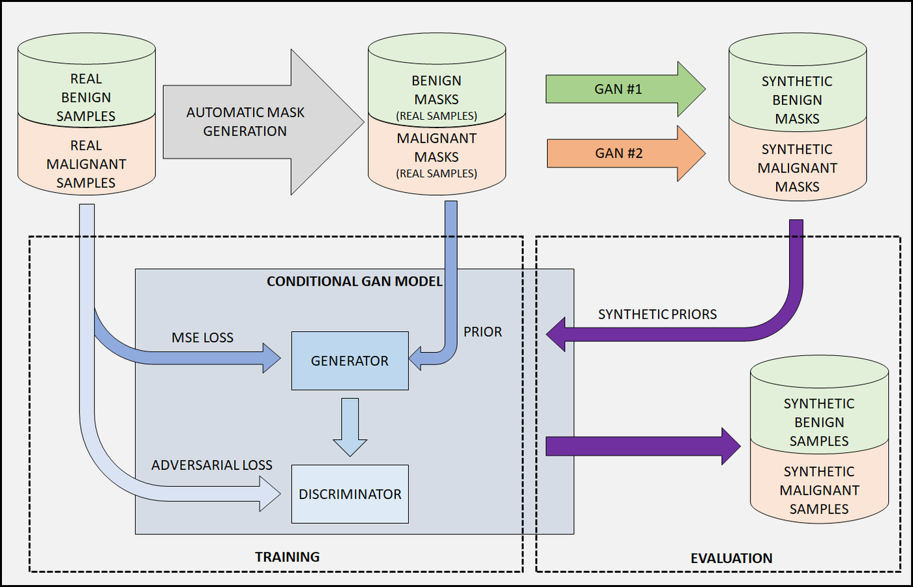
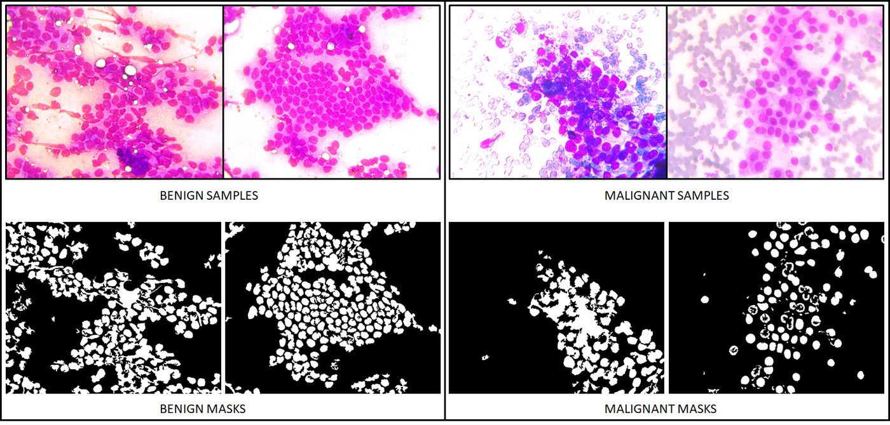
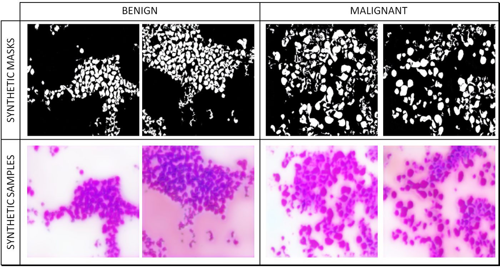

Making synthetic cell images to help a classifier learn from only 150 pictures
Deep learning needs a lot of examples, and medical images are hard to collect. We had about 150 microscope pictures of benign and malignant cells, far too few for a modern classifier to learn well. In this paper we describe SynCGAN, a way to generate extra, realistic-looking cell images, and we show that three standard classifiers score higher on our test images when trained with them.
The problem
The images come from fine needle aspiration cytology (FNAC), a test in which a thin needle takes a few cells from a lump and a doctor examines them under a microscope. Our samples were collected at Theism Medical Diagnostics Centre in Kolkata with an Olympus microscope at 40× magnification. We got around 156 images, 77 benign and 79 malignant.
The usual remedy for small data is augmentation, which means making new training examples from the old ones, for example by flipping or rotating the pictures or adding noise. A newer option is a generative adversarial network, or GAN. A GAN has two parts that compete. A generator draws pictures and a discriminator tries to tell them from real ones, and both improve as they play. Asked to draw a full microscope image from scratch, though, a GAN has too much to guess. Every pixel has three colour values, each with 256 possible levels.
The idea
We split the drawing into an easy step and a guided step. A black-and-white mask that marks where the nuclei sit is much simpler to produce, because every pixel is just on or off. So we first make masks, then paint a cell image on top of each one. A GAN that receives a guide like this is called a conditional GAN, and the mask is its prior, meaning the information it starts from.

How it works
The pipeline has three phases.
- Masks from real images. No one drew masks by hand. We stretch the contrast, convert to grey, apply adaptive thresholding, and then use Gaussian mixture clustering to separate nuclei from red blood cells and cytoplasm that have similar local contrast.
- Mask to image. The conditional GAN follows the pix2pix design. Its generator is a UNet-like network that upsamples with bilinear interpolation, because transposed convolutions leave checkerboard artifacts. Its discriminator is a PatchGAN. The generator is trained against both the discriminator and a mean squared error loss on the real image, weighted by 100, a value chosen on a small validation set.
- New masks per class. Two further GANs, one for benign and one for malignant, learn to produce masks from random noise. Their masks feed the trained conditional GAN, which paints the synthetic samples.

Training a GAN on so few masks was hard. The discriminator became too strong and stopped the generator from learning, so we used label smoothing, with real labels drawn between 0.9 and 1 and fake labels between 0 and 0.1. We also flipped real and fake labels at random iterations. The conditional GAN trained for up to 200 epochs and the mask GANs for about 1600, on a single Nvidia GTX 1060.

What we found
We kept 75 images per class and split them 3:1:1 into 90 training, 30 validation and 30 test images. We generated twice as many synthetic training images as real ones, 180 in all. Then we trained ResNet-152, DenseNet-161 and Inception-V3 and compared test accuracy.
Adding SynCGAN images raised accuracy for all three: ResNet-152 from 73.33% to 76.67%, DenseNet-161 from 80.00% to 86.67%, and Inception-V3 from 73.33% to 80.00%.
Traditional augmentation (flips, rotations, Gaussian noise) did less well. It lowered ResNet-152 to 70.00% and Inception-V3 to 63.33%, and raised DenseNet-161 only to 83.33%. Combining it with SynCGAN data was at par with SynCGAN alone or lower.
We also tried a plain GAN with no mask prior as a control. It did far worse. Trained on its images alone, the classifiers reached 50.00%, 50.00% and 56.67%, and adding them to the real data gave 63.33%, 60.00% and 66.67%, all below the original-data scores. Training on SynCGAN images alone gave 73.33%, 63.33% and 66.67%, so they help as a supplement rather than as a replacement for real images.
What it does not do
The test set is 30 images, so a single image is worth 3.3 percentage points. We say in the paper that the method depends heavily on how the masks are produced. Our masks come from one unsupervised nuclei-segmentation recipe, and we suggest trying other nuclei segmentation methods. We have also only tried one kind of cytology image.
The takeaway we would keep is that a GAN does much better with a simple guide than with none. Detailed labels were too costly to draw for every image, and rough automatic masks were enough to make the generated images useful. We also suggest that the approach could be extended to other cytological data.
Acknowledgements
This work is funded by the SERB (DST), Govt. of India sponsored project (order no. EEQ/2018/000963 dated 22/03/2019). The authors are thankful to Theism Medical Diagnostics Centre, Kolkata, West Bengal, India, for providing the cytology samples, and to the Centre for Microprocessor Application for Training, Education, and Research, Jadavpur University, for providing additional infrastructure for the research.
How to cite the paper
S Dey, S Das, Swarnendu Ghosh, S Mitra, S Chakrabarty, N Das (2019). SynCGAN: Using learnable class specific priors to generate synthetic data for improving classifier performance on cytological images. 8th National Conference on Computer Vision, Pattern Recognition, Image Processing & Graphics (NCVPRIPG), pp. 32–42 · Springer.